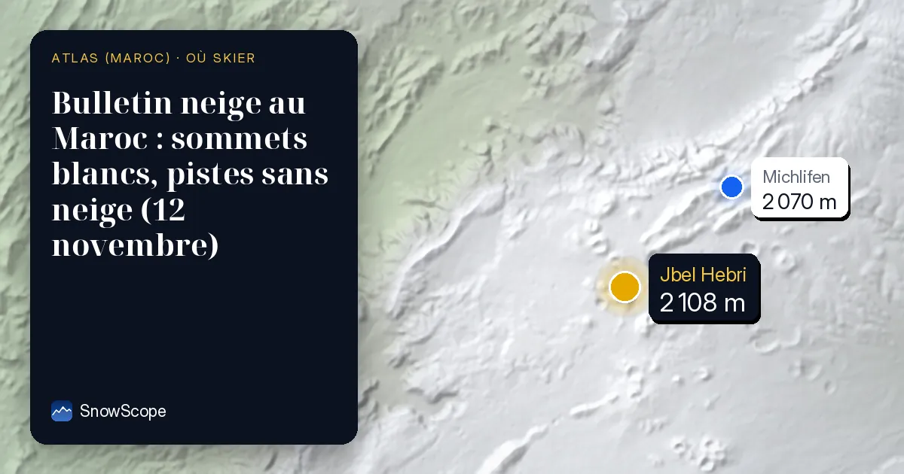
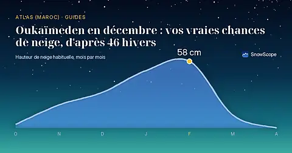
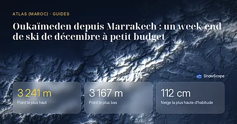
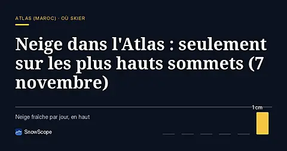

Bulletins neige · Atlas (Maroc)
Atlas (Maroc): Bulletin neige dans l'Atlas (Maroc), 12 novembre. Stations de l'Atlas aujourd'hui : pas de neige sur les pentes. De la neige seulement …
Bulletin neige au Maroc : sommets blancs, pistes sans neige (12 novembre)

Bulletin neige dans l'Atlas (Maroc), 12 novembre. Stations de l'Atlas aujourd'hui : pas de neige sur les pentes. De la neige seulement sur les plus hauts sommets : environ 40 km² de sol blanc, 10 cm au maximum. L'Atlas est petit sur une carte du monde et grand dans nos marges d'erreur : la neige y est discontinue et change vite.
La carte de neige du jour
Jbel Hebri : aucune neige visible sur les pentes. Michlifen : pentes nues. Oukaïmeden : aucune neige visible sur les pentes.
La zone blanche sur la carte est passée de 60 km² (10 novembre) à 40 km² aujourd'hui, et la prévision dit 30 km² le 15 novembre.


Décembre n'apporte que 18 cm de profondeur typique à mi-montagne à Oukaimeden, contre 53 cm en mars. Le début de saison est maigre mais possible. Données du 13 novembre 2026.

Le 15 décembre à Michlifen, 89 % des hivers sont presque sans neige. Les meilleures chances arrivent après une tempête, pas selon le calendrier. Données du 13 novembre 2026.

À la station de ski d'Oukaïmeden au Maroc, un 15 décembre typique n'apporte que 16 cm à mi-montagne. SnowScope montre les probabilités à partir de 46 hivers de données.

Oukaïmeden se trouve à 50 km de Marrakech. La neige de décembre est fine et imprévisible : organisez-vous autour des tempêtes, pas du calendrier. Données du 13 novembre 2026.

Le 15 décembre, Oukaïmeden mi-montagne affiche 16 cm contre 89 cm à Val Thorens. Nous avons vérifié les tarifs des remontées. Données du 13 novembre 2026.
Prévision de neige sur deux semaines pour les stations Atlas montre pratiquement aucune neige nouvelle attendue du 13 au 26 novembre. Les données SnowScope proviennent du 12 novembre.

Bulletin neige dans l'Atlas (Maroc), 12 novembre. Stations de l'Atlas aujourd'hui : pas de neige sur les pentes. De la neige seulement sur les plus …

Pas encore de neige à Oukaïmeden le 12 novembre. Les pics de l'Atlas sont dénudés ; la saison hivernale atteint généralement son apogée en mars avec 58 cm au sommet.

Seuls les plus hauts pics retiennent la neige dans l'Atlas aujourd'hui : 20 km² blancs, 6 cm d'épaisseur. Les pistes de ski sont dénudées. Données du 11 novembre.

Jusqu'où la neige est descendue, quand elle est partie, et comment cet hiver se compare à 2008-09 et aux années sèches.

Seulement 8 cm de neige recouvrent les plus hauts sommets de l'Atlas aujourd'hui. Aucune neige dans les stations de ski. La couverture diminue rapidement en mi-novembre.

Combien d'eau la neige de l'Atlas pourrait garder en février 2027 : la prévision saisonnière européenne est environ 3 °C plus douce et plus humide à l'ouest et au sud, et les chances de neige restent faibles sur les bassins du Maroc.

Prévision janvier 2027 pour l'Atlas marocain : 69 millions m³ d'eau de neige attendus, bien en dessous de la normale de 206. Données du 10 novembre 2026.

Bou Iblane reste nu jusqu'en décembre. Prévisions saisonnières : 2,3 °C plus chaud que la normale, seulement 22 cm de neige nouvelle attendus, 0 cm au sol le 31 décembre. Données : 10 novembre 2026.

Oukaimeden fait face à un décembre chaud avec 13 cm prévus le 31 décembre, bien en dessous de la normale de 26 cm. Données du 10 novembre 2026.

Un carnet pratique sur Oukaïmeden, dans le Haut Atlas : quand la neige arrive, en quelle quantité, quelles pentes viser et comment y aller depuis Marrakech.

Michlifen, près d'Ifrane, a de la neige par courts épisodes plutôt qu'une saison. Ce que montrent 46 hivers passés, pourquoi la hauteur habituelle est nulle, et comment être là les bons jours.
Limite pluie-neige proche de 3 710 m du 8 au 12 novembre : pluie à Oukaïmeden et Imlil, neige au sommet du Toubkal. Carte et graphique.

Environ 65 mm sur le Toubkal d'ici le 12 novembre, mais l'isotherme 0 °C reste vers 4 000 m : pluie à Oukaïmeden et dans les vallées, neige au sommet seulement.

Les stations de ski de l'Atlas n'ont pas de neige aujourd'hui. Seulement 80 km² de terrain blanc subsistent sur les plus hauts pics, avec un maximum de 9 cm. Données du 7 novembre.